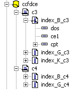

Le dictionnaire contient en plus de la description des fichiers et des tables, la description des index.
Les index permettent un accès rapide aux enregistrements d’une table. De leur bonne utilisation dépendent en grande partie les performances d’une application.
Que vous utilisiez la base de fichiers Harmony ou une base SQL (SQL Serveur ou Oracle), il vous faut définir les index. Ceux-ci seront ensuite créés dans la base utilisée.
Le maniement des fichiers séquentiels-indexés d’Harmony est décrit en détail au chapitre "Fichiers séquentiels-indexés" du livre de la documentation Xwin - Programmation consacré au langage Diva.
Hiérarchie
Lors de l’édition des index d’un dictionnaire, la hiérarchie est la suivante :
Fichier
Table
Index
Champ
Exemple :

D’après cet exemple, nous voyons que dans le fichier ccfdce, la table c3 à trois index : index_B_c3, index_G_c3 et index_K_c3.
L’index index_B_c3 est composé de trois champs : dos,ce1 et cpt.